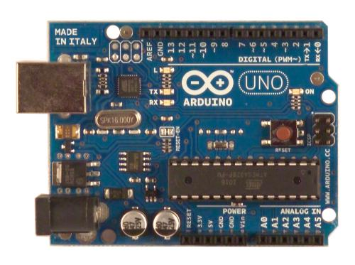
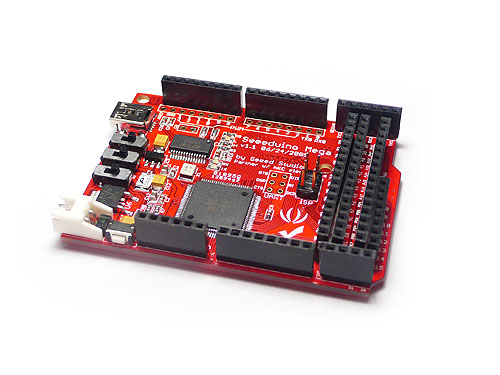
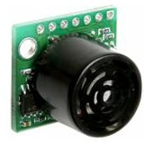
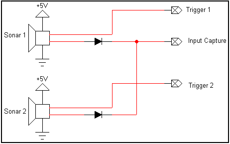
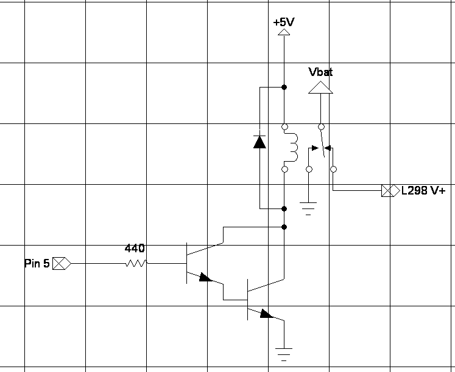
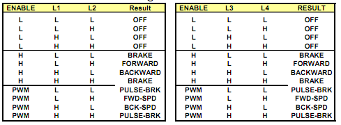
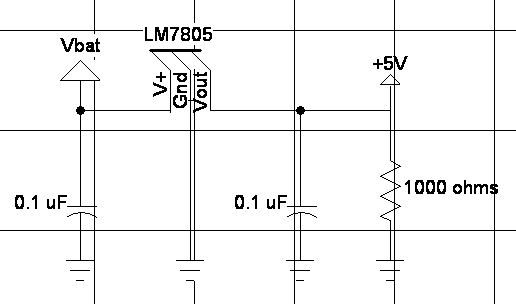

Electronic Components
This section contains an overview of some of the components that we are using for this project.
Arduino Hardware
Two Arduino UNOs were provided to our group. These boards provide a USB-serial chip, voltage regulation, and breaks out the pins of an Atmel ATmega328.
One Seeeduino Mega was provided. The Seeeduino is a clone of the Arduino Mega, but breaks out more pins of the Atmel ATmega1280.
Both controllers operate at a maximum 16MHz at 5V. The Mega can operate from 3.3V at reduced clock speeds, but this has not been necessary to change. Since the main difference in controllers is the pin count, the UNOs were used as radio transceivers and the Mega was reserved for hovercraft sensors and actuators.
Sonar
The sonars are MaxBotix LV-MaxSonar-EZ1 ultrasonic rangefinders. Once powered with 5V, they can send a single ping by pulling a signal line low for 30 uSec. An output pin will remain high until the ping is received, or it times out after 50ms. The time is divided by 147uSec to return a distance in inches. The maximum resolution of the sonar is 1".
The input capture pin of Timer4 in the Seeeduino Mega was used to sample the sonar. When the ping was triggered, a falling-edge interrupt was set for ICP4. This yields extremely precise timing capabilities and does not interfere with other code on the Mega. A seperate trigger signal is needed for each sonar but all sonar outputs are connected via diodes to the same input pin. The connection diagram is shown below.
Motor Driver
The Compact L298 Motor Driver from Solarbotics was used to drive the two motors of our project. It is powered directly from our battery supply, but connected through a relay controlled by an Arduino. However, the relay cannot be controlled directly since it requires too much current. Therefore, a buffering circuit must be designed. We used two transistors to create a darlington pair.
Operation of the motor driver is accomplished with three pins per motor. Two of these pins define the directon of the motor, and the other is an enable pin that can be pulse width modulated for speed control. Below is the logic table for the two motors. We are using the third set of tables which uses PWM, but we aren't using the pulse-brake function.
Power Supply
This project contains both analog circuitry and digital circuitry so great care must be taken to ensure noise is eliminated or suppressed. One of the ways to do this is in the power supply. We are using an extremely large power supply for the typical draw of this project. It is a 7.2 V battery rated at 4200mAH. This 7.2 V supply is used to directly power the motors, but this voltage must be regulated at 5 V with a LM7805 voltage regulator. Our circuit is very similar to the one pictured below. The two capacitors are used for noise suppression and are 0.1 uF each. We didn't record any noise issues, but they are there just in case. There is also a 1000 ohm resistor connected from the output to ground to maintain the minimum current for regulator operation.
